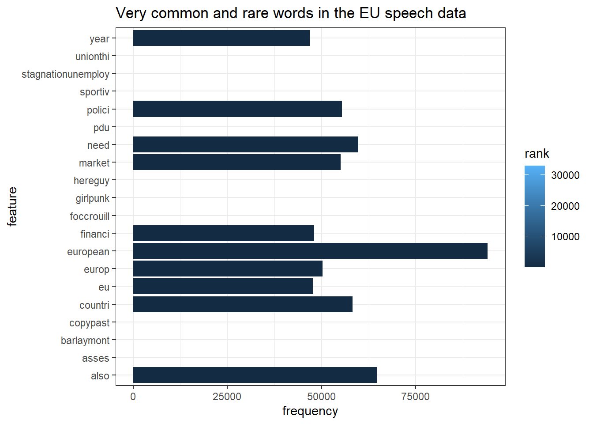
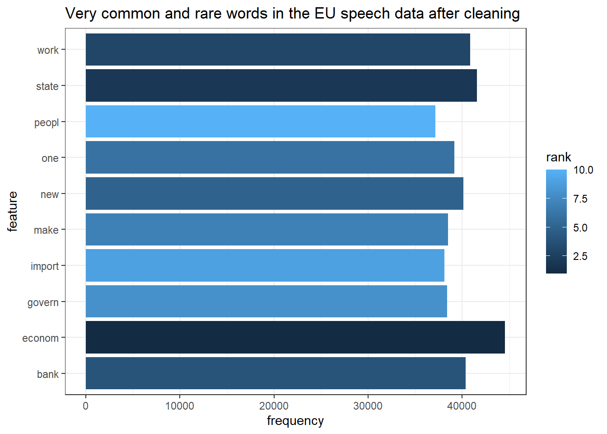

Chapter 1 Frequency based analysis of text:
While this might be stating the obvious, content analysis is primarily about quantitatively describing the content of texts. Of course, this does not mean that inferences cannot be made based on the description but the main goal is to create a numeric description of the text. One of the most basic method of this is simply to count the occurance of something in the text. Then, for example, we can look at the differences in frequencies in a comparative study to make an inference. So we will take a look at how to describe a text with some assitance from computer. There are many methods to quantitatively summarise and compare texts; collocation analysis, text similarity, keyness, and dictionary to name a few. We will however mainly use quanteda and quanteda.textstats packages to do these.
1.1 Cleaning text data:
1.1.1 Removing the noise
The main difference between text as data-source and other data sources such as surveys is how structured the data is. For example, if you download one of the major surveys such as European Social Survey (ESS), you will get a dataset which is cleaned and structured thus ready to use. We often don’t have this luxury with text as data-source. Raw datasets produced directly from text are often very noisy. So far we have seen how load and wrangle text data into a numeric representation. There is still business of cleaning it. So we will start by taking a look at a few common methods of cleaning text data. For illustration we will use EUspeech dataset again.
library(quanteda)
library(quanteda.textstats)
library(tidyverse)
library(here)
eu_speech<- readRDS(here("euspeech","speech_data","EU_speech.RDS"))
glimpse(eu_speech)## Rows: 12,297
## Columns: 8
## $ texts <chr> "today littl like chang guard outgo chairman european counci~
## $ title <chr> "Intervention of Guy Verhofstadt during the Conference of Pr~
## $ date <chr> "05-11-2014", "22-10-2014", "20-06-2013", "15-04-2013", "13-~
## $ country <chr> "European Parliament", "European Parliament", "European Parl~
## $ speaker <chr> "Guy Verhofstadt", "Guy Verhofstadt", "Guy Verhofstadt", "Gu~
## $ length <int> 393, 78, 280, 317, 582, 356, 861, 820, 515, 1425, 370, 214, ~
## $ language <chr> "en", "en", "en", "en", "en", "en", "en", "en", "en", "en", ~
## $ language2 <chr> "english", "english", "english", "english", "english", "engl~eu_speech<- eu_speech %>%
rownames_to_column(var = "doc_id") %>%
select(texts:speaker,doc_id,-title)
eu_speech_corpus<- corpus(x = eu_speech,docid_field = "doc_id",text_field = "texts")
head(docid(eu_speech_corpus))## [1] Verhofstadt_1 Verhofstadt_2 Verhofstadt_4 Verhofstadt_5 Verhofstadt_6
## [6] Verhofstadt_7
## 12297 Levels: Verhofstadt_1 Verhofstadt_2 Verhofstadt_4 ... Blair_787colnames(docvars(eu_speech_corpus))## [1] "date" "country" "speaker"eu_speech_tokens<- eu_speech_corpus %>%
tokens()Lets quickly break down the code.First we load the dataset to our work environment. Then we create a column called doc_id. Every document in the corpus needs to have a unique id so that we can keep track of them. In this case we are lucky and the documents were given a unique id by people who created the dataset. Then we select relevant variables to keep in the dataset and remove irrelevant one (i.e title). We do this for two reasons, first corpus() function retain all variables besides what we specified as docid_field and text_field as document information. This can be very useful, for example, if you want to study a subset of document. However, having too many variables as document variables can easily lead to confusion and tax your computer. Finally, we create tokens out of corpus. So far we have only repeated what we saw in the last chapter.
Now begins the fun part, that is cleaning the data. Unfortunately, there is no fix recipie for this but there are a few common cleaning practices. First of these is removing stop words. Stop words are words that are extremely common in the text and not very informative. Articles such as “the” and “a/an”, and prepositions such as “on”, “in”, “by” are a few examples in English. There are existing lists of these words available for several languages in stopwords package. It is important to note that stop words are not necessarily meaningless or the same in all languages. Consider this sentence: “The property of Justice minister was vandalized by his own wife”. If we indiscriminately remove prepositions we would also get rid of “by” which indicates who did the action. We can often remove stopwords in a bag-of-words approach as we don’t care about word sequences but they can be useful for other things such as clause analysis. Another important point is that they won’t be the same group of words in every language. For example, in some agglutinative languages such Hungarian and Turkish, do not have articles but prepositions. So it is important to carefully consider your data source and your purpose before cleaning the data. lets see an example of how to do this:
head(eu_speech_tokens)## Tokens consisting of 6 documents and 3 docvars.
## Verhofstadt_1 :
## [1] "today" "littl" "like" "chang" "guard" "outgo"
## [7] "chairman" "european" "council" "herman" "van" "rompuy"
## [ ... and 196 more ]
##
## Verhofstadt_2 :
## [1] "speech" "mention" "letter" "bernard" "foccrouill"
## [6] "director" "music" "festiv" "aix" "en"
## [11] "provenc" "name"
## [ ... and 30 more ]
##
## Verhofstadt_4 :
## [1] "liber" "democrat" "take" "budgetari" "power"
## [6] "european" "parliament" "serious" "confirm" "report"
## [11] "negoti" "next"
## [ ... and 128 more ]
##
## Verhofstadt_5 :
## [1] "four" "year" "sustain" "financi" "crisi" "ad"
## [7] "hoc" "polici" "measur" "cypriot" "experi" "demonstr"
## [ ... and 169 more ]
##
## Verhofstadt_6 :
## [1] "intervent" "march" "spring" "european" "council" "dear"
## [7] "presid" "start" "request" "may" "ask" "rais"
## [ ... and 286 more ]
##
## Verhofstadt_7 :
## [1] "respond" "today" "european" "council" "presid" "herman"
## [7] "van" "rompuy" "invit" "enlarg" "confer" "presid"
## [ ... and 161 more ]eu_speech_tokens_no_stop_words<- eu_speech_tokens %>%
tokens_select(pattern = stopwords(language = "en",source = "snowball"),
selection = "remove",
valuetype = "fixed")You can also create your own stopword dictionary based on your corpus. Extremely frequent and extremely rare words are often not very informative for quantitative analysis. So we can identify them and remove them as well.
eu_speech_dfm<- eu_speech_tokens_no_stop_words %>%
dfm()
eu_speech_frequencies<- textstat_frequency(x = eu_speech_dfm)
eu_speech_max_10<- eu_speech_frequencies %>%
slice_max(order_by = frequency,n = 10)
eu_speech_min_10<- eu_speech_frequencies %>%
slice_min(order_by = frequency,n = 10)
top_and_bottom<- rbind(eu_speech_max_10,eu_speech_min_10)
top_and_bottom[1:20,] %>%
ggplot(aes(x = feature,y = frequency))+
geom_bar(aes(fill = rank),stat = "identity", position = "dodge")+
theme_bw()+
coord_flip()+
labs(title = "Very common and rare words in the EU speech data")
eu_speech_stopwords<- top_and_bottom %>% pull(feature)
eu_speech_tokens_no_stop_words<- eu_speech_tokens_no_stop_words %>%
tokens_select(pattern = eu_speech_stopwords, selection = "remove",valuetype = "fixed")
eu_speech_tokens_no_stop_words %>%
dfm() %>% textstat_frequency(n=10) %>%
ggplot(aes(x = feature, y = frequency))+
geom_bar(aes(fill = rank),stat = "identity", position = "dodge")+
theme_bw()+
coord_flip()+
labs(title = "Very common and rare words in the EU speech data after cleaning")
Another thing we might want to remove is symbols and punctuation. While these are very meaningful in a sentence, they are often not very information in a bag-of-word approach. Lets see two different ways to do it:
eu_speech_tokens_no_stop_words_punctuation<- eu_speech_tokens_no_stop_words %>%
tokens_select(pattern = "[[:alnum:]]",selection = "keep", valuetype = "regex")
eu_speech_tokens_no_stop_words_punctuation_alt<- eu_speech_tokens_no_stop_words %>%
tokens_select(pattern = "[[:punct:]]",selection = "remove", valuetype = "regex")Here, we are using something we didn’t before. Expressions [:alnum:] and [:punct:] are called regular expressions or regex. Regular expressions are used to identify a pattern in a text. We will not dive deep into how to create these from scratch, you can take a look at this web-page for further information. Going back to the example above, we removed symbols and punctuation in two different ways. In the first example, we are keeping all alpha-numeric expressions with [:alnum:] regex while discarding everything else. Whereas in the second example, we are explicitly removing punctuation with [:punct:] while keeping symbols such as € and $. This is to show that there are many ways to accomplish a task and you need to choose the method that works for you.
1.1.2 Stemming and lemmatization:
Another common way of reducing noise in the text data is stemming. Stemming is removing the suffixes of a word and keep only the root of the word. For example, if we have words fishes, fishing, fished, and fisher in the document, converting them into token would create four individual columns in the dataset. However, stemming would convert these word to fish thus reducing the number of dimensions in the dataset. Stemming inevitably causes some meaning loss, after all “fishers went fishing for fishes and fished tons of fish” has a completely different meaning than “fish went fish for fish and fish tons fish”, however, if the individual words do not occur frequently enough they would only confuse the statistical inference.
Lemmatisation serves a similar purpose as stemming. The main difference is lemmatisation is more aggressive. Consider words go, going, went, and gone. They are all time conjugates of the verb to go. Unlike stemming, lemmatisation would remove conjugation and convert them to go. The main advantage of lemmatisation is that it is able to differentiate between words based on context a bit better than stemming. For example, The word “meeting” can be either the base form of a noun or a form of a verb (“to meet”) depending on the context; e.g., in our last meeting or We are meeting again tomorrow. Unlike stemming, lemmatisation attempts to select the correct lemma depending on the context. There is unfortunately no sure-fire recipe to make one better than the other one. So you need to consider gains and loses of employing each method. Now, lets see how we can do them:
eu_speech_stemmed<- eu_speech_tokens %>%
tokens_wordstem(language = "english")The code above will stem English words and return them as tokens. Quanteda package is able to do stemming in the following package if you have SnowballC package installed. In this particular case, the speeches are already stemmed by the authors so we do not observe any difference in the results.
SnowballC::getStemLanguages()## [1] "arabic" "basque" "catalan" "danish" "dutch"
## [6] "english" "finnish" "french" "german" "greek"
## [11] "hindi" "hungarian" "indonesian" "irish" "italian"
## [16] "lithuanian" "nepali" "norwegian" "porter" "portuguese"
## [21] "romanian" "russian" "spanish" "swedish" "tamil"
## [26] "turkish"For lemmatisation, however, we need another package. So we will make a quick detour in our workflow to get lemmatisation. Note that you need to have python installed for this pacage to work
#install the package
install.packages("spacyr")
#load the package
library(spacyr)
#install spacy python executables
spacy_install()
#initialize spacy
spacy_initialize()
#process speeches
eu_speech_lemmatised<- spacy_parse(x = eu_speech$texts,lemma = T)Bonus point, you can do named entity recognition, a natural language processing designed to extract entities such as place and people names with spacyr too.